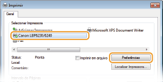
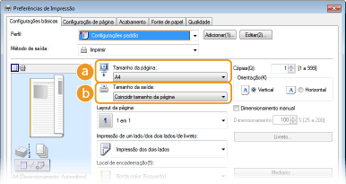
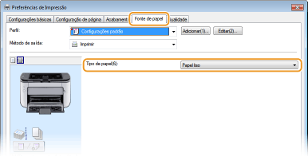
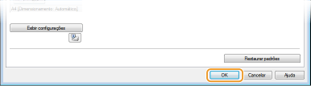
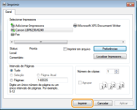
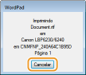

0KU8-011
Esta seção explica como imprimir um documento em seu computador usando o driver da impressora.

1
Abra um documento em um aplicativo e visualize a caixa de diálogo de impressão.
O modo como a caixa de diálogo de impressão é visualizada difere em cada aplicativo. Para obter mais informações, consulte os manuais de instruções do aplicativo que você está usando.
2
Selecione seu esta impressora e clique em [Preferências] ou [Propriedades].

A tela exibida será diferente dependendo do aplicativo que você estiver utilizando.
3
Defina o tamanho do papel.

 [Tamanho da página]
[Tamanho da página]Selecione o tamanho utilizado quando criou o documento no aplicativo.
 [Tamanho da saída]
[Tamanho da saída]Selecione o tamanho de papel a ser usado na impressão real. Se você selecionar um tamanho diferente do [Tamanho da página], o driver da impressora aumentará ou reduzirá automaticamente os dados para coincidir com o [Tamanho da saída]. Ampliando ou reduzindo
4
Na guia [Fonte de papel], selecione o tipo de papel.
Defina o [Tipo de papel] de acordo com o tipo de papel usado na impressão. Tipo de papel e configurações de papel do driver da impressora

5
Defina as outras preferências de impressão conforme necessário. Diversas configurações de impressão

Você pode registrar as configurações que você especificou nesta etapa como um "perfil" e usar o perfil sempre que for imprimir. Isso elimina a necessidade de especificar as mesmas configurações todas as vezes que você for imprimir. Registrando combinações de configurações de impressão frequentemente usadas
6
Clique em [OK].

7
Clique [Imprimir] ou [OK].

 |
A impressão começa. Em alguns aplicativos, uma tela como a mostrada abaixo é exibida.
 Se for exibida uma tela como a mostrada acima, você pode cancelar a impressão clicando em [Cancelar]. Se a tela desaparecer ou nunca for exibida, você pode cancelar a impressão de outras maneiras. Cancelando trabalhos de impressão
|
 |
|
Se você se sujar com o toner das folhas impressas ou se o toner sair da página
Se você utiliza um papel com superfície grossa ou se você sujar a roupa com toner, defina [Tipo de papel] como [Papel áspero 1] (16,0 a 23,9 lb Bond [60 a 90 g/m²]) ou [Papel áspero 2] (24,0 lb Bond a 60,3 lb Cover [91 a 163 g/m²]).
Não toque nas páginas impressas. Não toque em folhas recém-impressas com seus dedos ou roupas. Você poderá sujar os dados ou roupas e o toner poderá sair da página.
|
 |
|
Ao imprimir a partir de um aplicativo Windows Store no Windows 8/Server 2012
Chame a barra de botões do lado direito da tela e continue da seguinte maneira.
Windows 8/Server 2012
Toque ou clique em [Dispositivos] Windows 8.1/Server 2012 R2
Toque ou clique em [Dispositivos] Imprimindo dessa forma, apenas algumas configurações de impressão podem ser utilizadas.
Se a mensagem <A impressora requer sua atenção. Vá para a área de trabalho para cuidar dela.> for exibida, vá para a área de trabalho e siga as instruções na caixa de diálogo exibida na tela. Essa mensagem aparece quando é preciso digitar o nome de usuário antes de imprimir ou se for preciso ajustar alguma outra configuração.
|